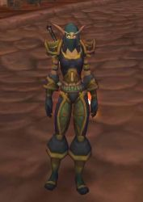

1er Août 2018
3ème jour de la Décade du Lapin ( Lune de l'Esprit ) -
Les Terres de Kirin Tor
Ombrea
Points : 3

Joué par :
Ombrea
Joué par :
[ Information masquée ]
Age : 101ans
Lieu de naisance : Darnassus
Signe de naissance : Tigre
Sexe : Femme
Race : Elfe
Faction : Alliance
Formation : Guerrier
Niveau : 60
Guilde :
CendresduPhoenix(Les)Artisanat 1 : Forgeron
Artisanat 2 : Mineur
Description :
Fille de Eloumbrea Nightbeauty et d'un père inconnu. Elle est née à Darnassus, capitale des Elfes. Laissée seule par sa mère pendant les guerres de l'Alliance face à la Horde, Ombrea dut se débrouiller seule. Vous la connaissez Rusée, Belle et Amicale; Mais vous pouvez la voir froide, son regard dans le votre sans signe ou expression, prête à sortir son arme. Garde du Corps, Espionne et Mercenaire, Ombrea connait son boulot ! Son Ombre Veille sur vous ou est prête à vous attaquer, à vous de choisir... Mais faites le bon choix sinon vous le regretterez...
Comme son signe de naissance l'indique, elle est l'amie fidèle des Tigres et parle leur language: elle n'accepte pas qu'une personne tue un tigre.
A 90ans, elle retrouva sa soeur jumelle Rachnette qu'elle avait perdu de vu toute ces années.
Ombrea s'est mariée à 95ans avec Timeknight, un humain chevalier de la lumière mais celui-ci a disparu depuis quelques temps. Sans nouvelles de son mari, Ombrea garde toujours au fond de son coeur l'espoir de le revoir un jour. Depuis 6ans de mariage, elle est restée fidèle à son mari.